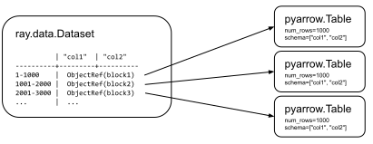

Key Concepts
Contents
Key Concepts#
Dataset#
A Dataset operates over a sequence of Ray object references to blocks. Each block holds a set of records in an Arrow table or pandas DataFrame. Having multiple blocks in a dataset allows for parallel transformation and ingest.
For ML use cases, Dataset natively supports mixing tensors with tabular data. To learn more, read Working with tensor data.
The following figure visualizes a dataset with three blocks, each holding 1000 rows. Note that certain blocks may not be computed yet. Normally, callers iterate over dataset blocks in a streaming fashion, so that not all blocks need to be materialized in the cluster memory at once.
Reading Data#
Dataset uses Ray tasks to read data from remote storage in parallel. Each read task reads one or more files and produces an output block:

You can manually specify the number of read tasks, but the final parallelism is always capped by the number of files in the underlying dataset.
For an in-depth guide on creating datasets, read Loading Data.
Transforming Data#
Dataset uses either Ray tasks or Ray actors to transform data blocks. By default, it uses tasks.
To use Actors, pass an ActorPoolStrategy to compute in methods like
map_batches(). ActorPoolStrategy creates an autoscaling
pool of Ray actors. This allows you to cache expensive state initialization
(e.g., model loading for GPU-based tasks).
For an in-depth guide on transforming datasets, read Transforming Data.
Shuffling Data#
Operations like sort() and groupby()
require blocks to be partitioned by value or shuffled. Dataset uses tasks to shuffle blocks in a map-reduce
style: map tasks partition blocks by value and then reduce tasks merge co-partitioned
blocks.
Call repartition() to change the number of blocks in a Dataset.
Repartition has two modes:
shuffle=False- performs the minimal data movement needed to equalize block sizesshuffle=True- performs a full distributed shuffle
Dataset can shuffle multi-terabyte datasets, leveraging the Ray object store for disk spilling. For an in-depth guide on shuffle performance, read Performance Tips and Tuning. Note that operations like shuffle materialize the entire Dataset prior to their execution (shuffle execution is not streamed through memory).
Iteration and materialization#
Most transformations on a dataset are lazy. They don’t execute until you iterate over the dataset or call
Dataset.materialize(). When a Dataset is materialized, its
type becomes a MaterializedDataset, which indicates that all its blocks are materialized in Ray
object store memory.
Dataset transformations are executed in a streaming way, incrementally on the data and with operators processed in parallel, see Streaming Execution.
Datasets and MaterializedDatasets can be freely passed between Ray tasks, actors, and libraries without incurring copies of the underlying block data (pass by reference semantics).
Fault tolerance#
Dataset performs lineage reconstruction to recover data. If an application error or
system failure occurs, Dataset recreates lost blocks by re-executing tasks. If compute=ActorPoolStrategy(size=n) is used, then Ray
restarts the actor used for computing the block prior to re-executing the task.
Fault tolerance is not supported if the original worker process that created the Dataset dies. This is because the creator stores the metadata for the objects that comprise the Dataset.